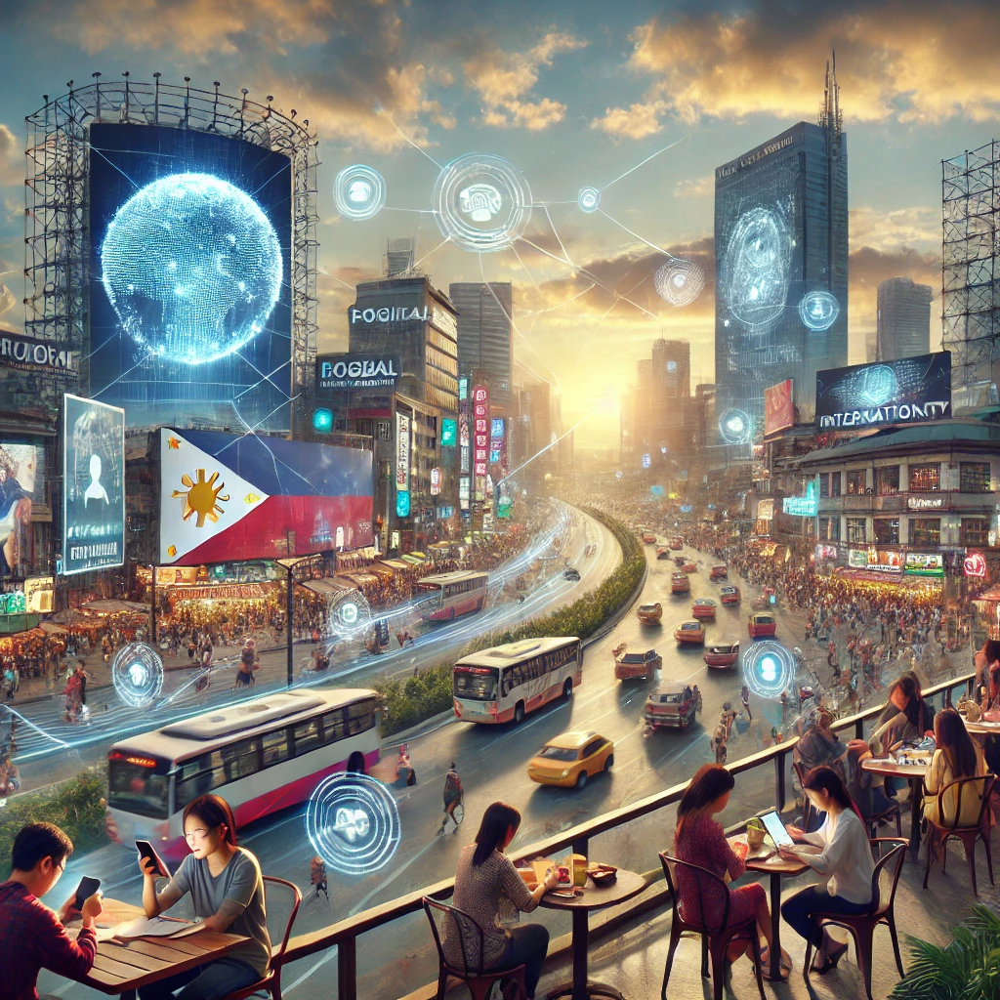
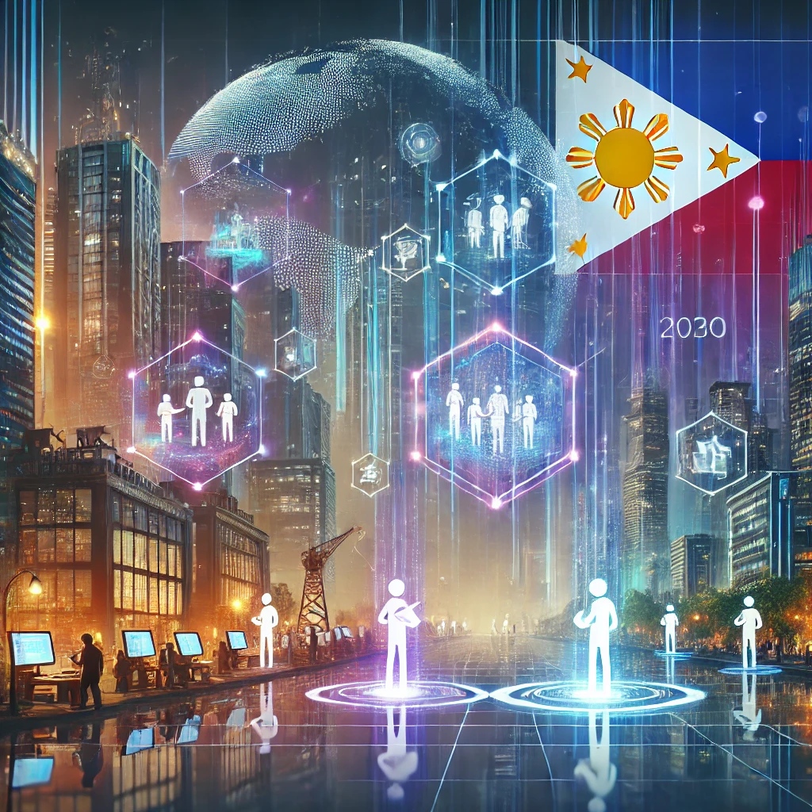
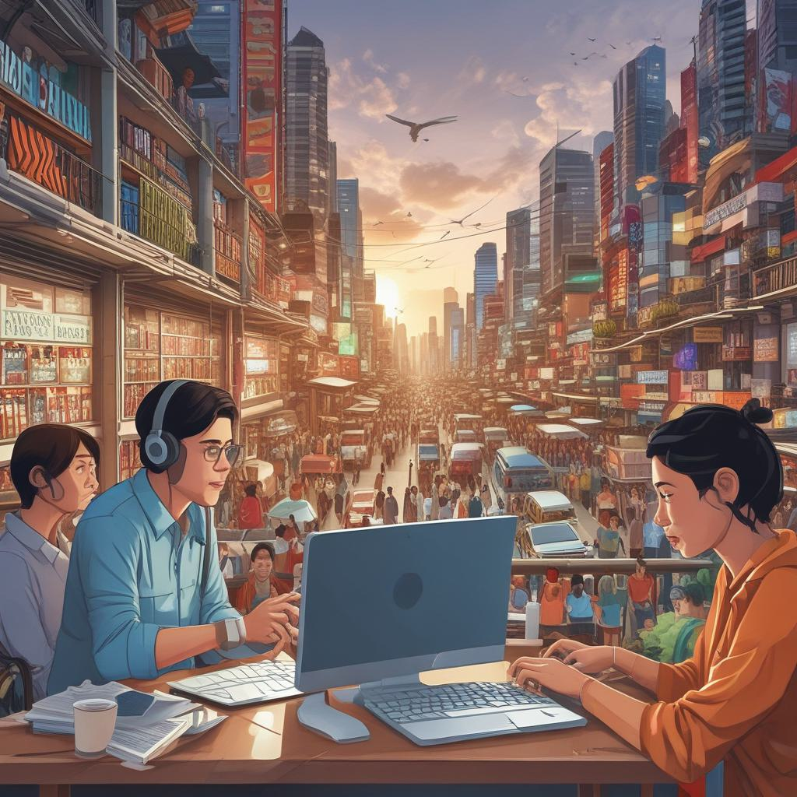
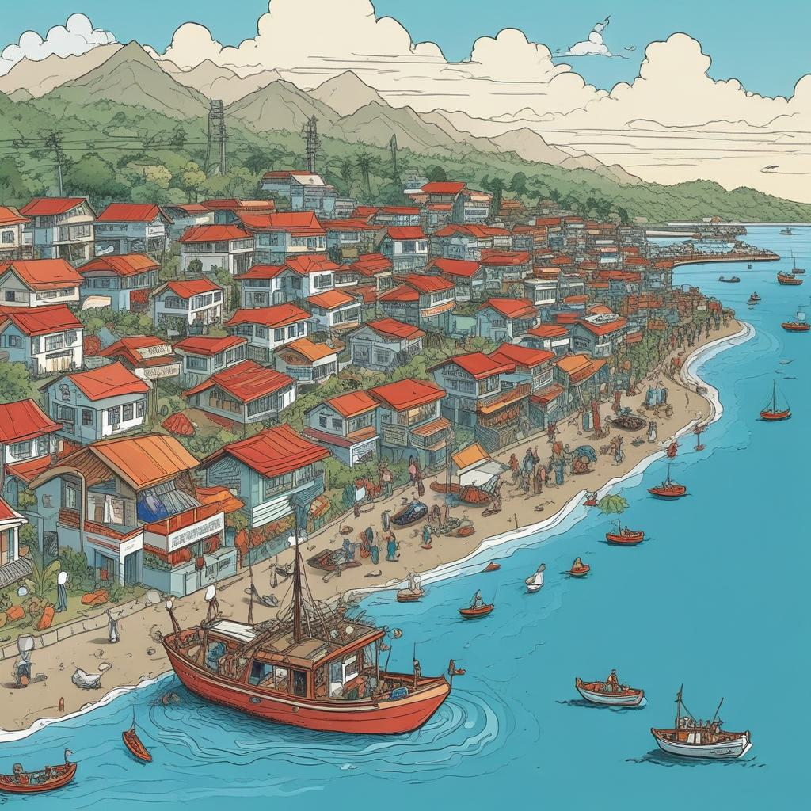
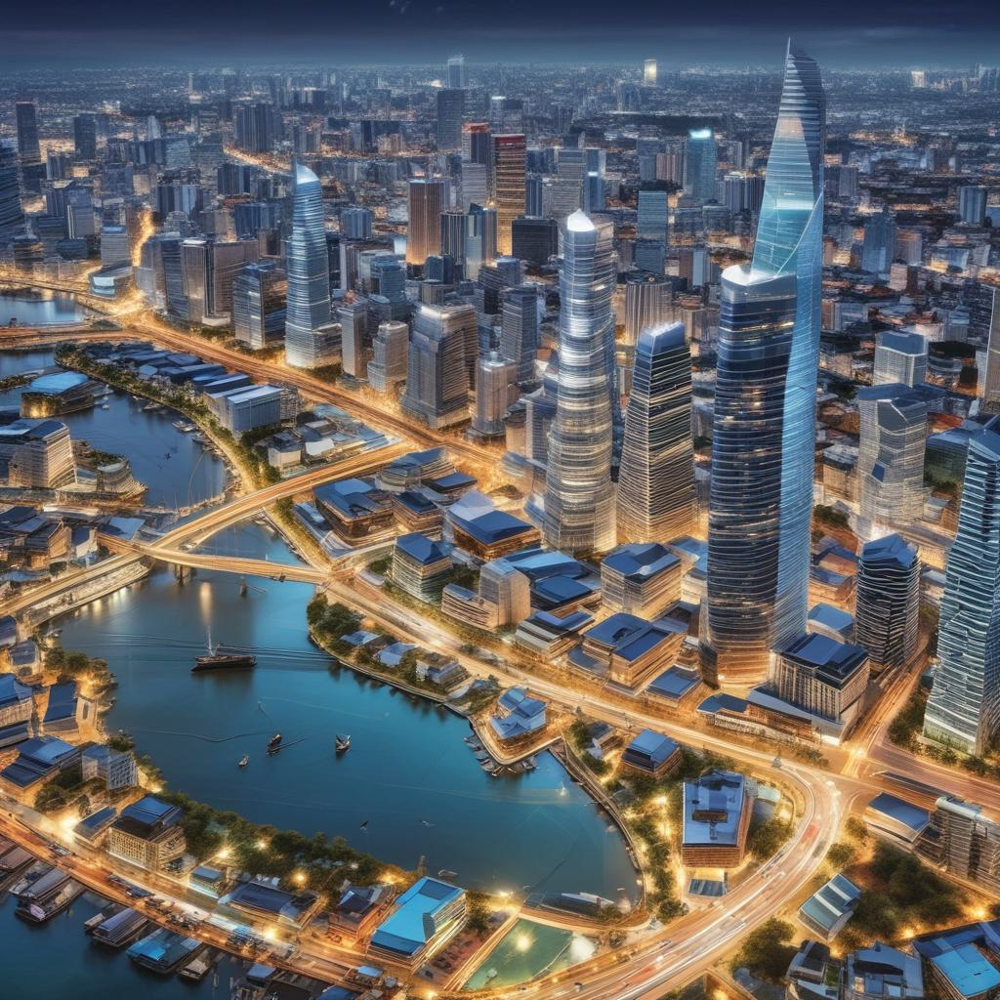
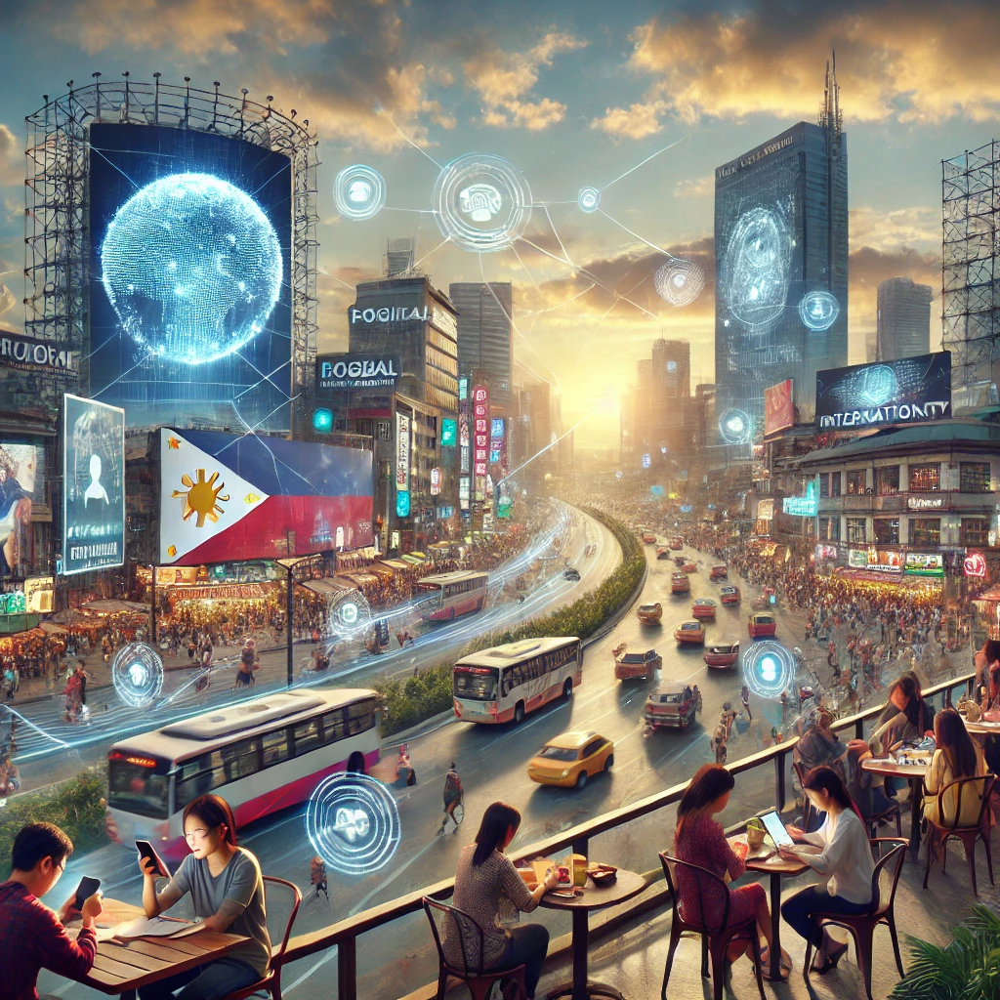
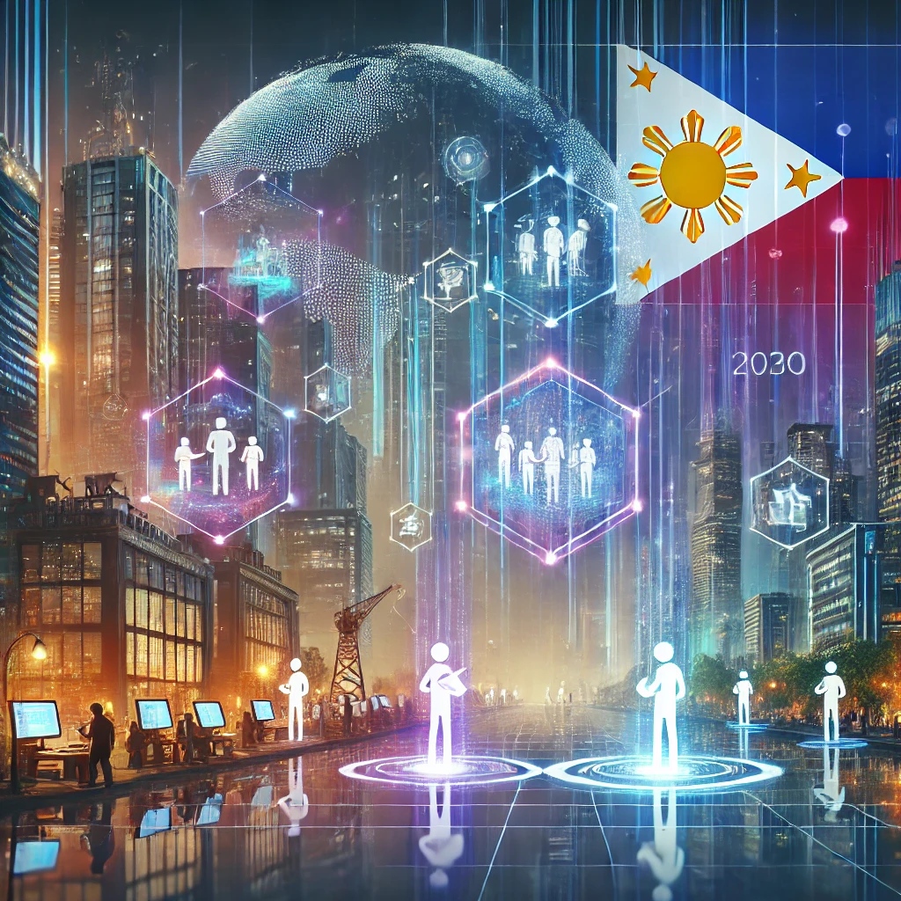
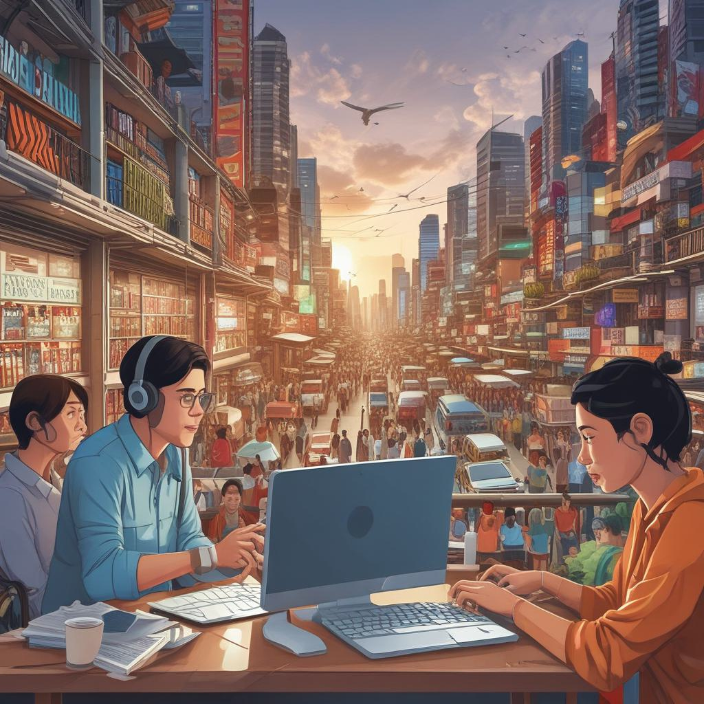
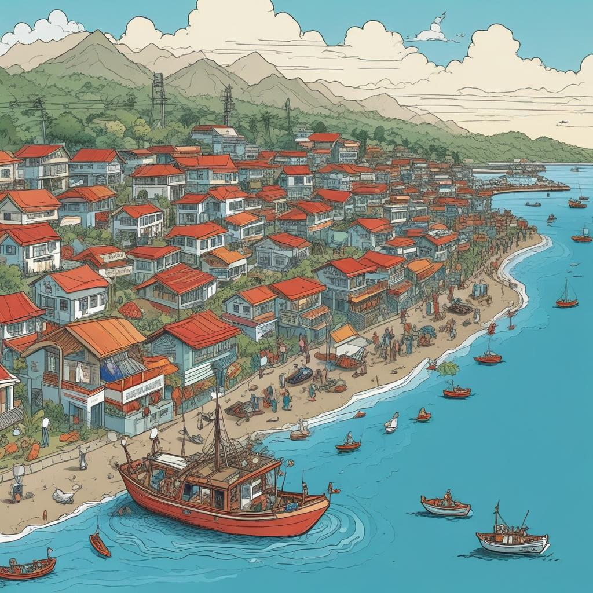
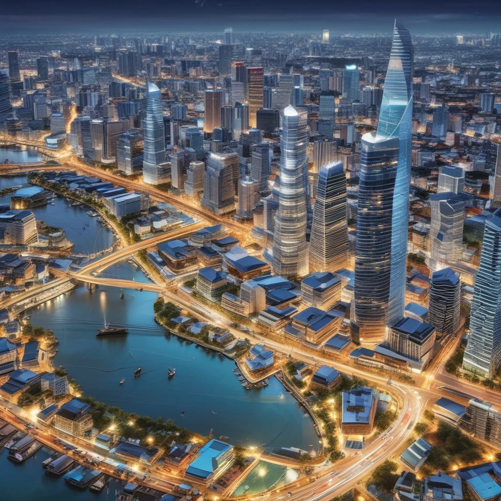

| Category | Chosen Decade (2000-2010) | Present Time (2024) | Future (2030) |
|---|---|---|---|
| Key Events/Highlights |  |  | |
| Affect, Senses, & Feelings |  |
 |  |
| Space |  |  |
 |
| Globalization |  |
 |
 |
Journey through a decade of Philippine history with images capturing transformation and hope for tomorrow.
| Category | Chosen Decade (2000-2010) | Present Time (2024) | Future (2030) |
|---|---|---|---|
| Key Events/Highlights |  |  | |
| Affect, Senses, & Feelings | |
 | |
| Space |  | |
|
| Globalization | |
|
 |
Price: BTC
Bidders:
Artist: